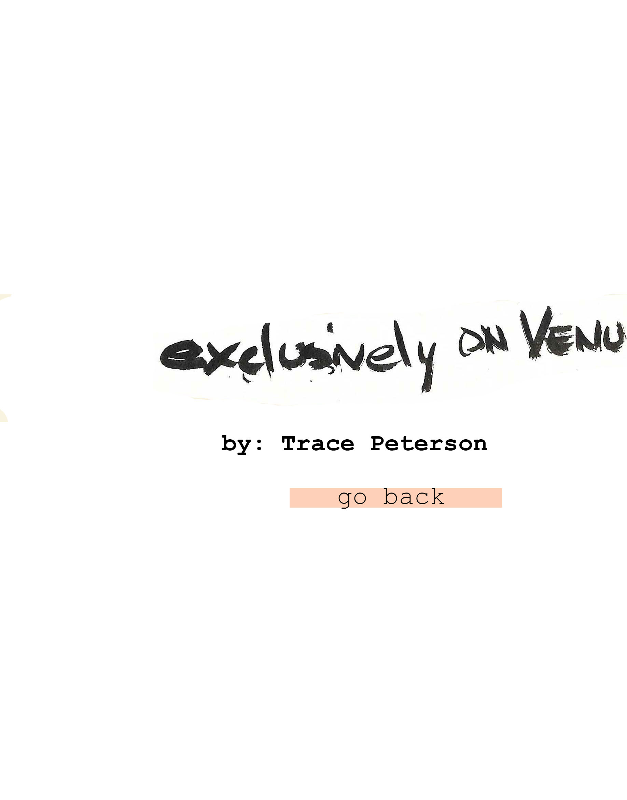
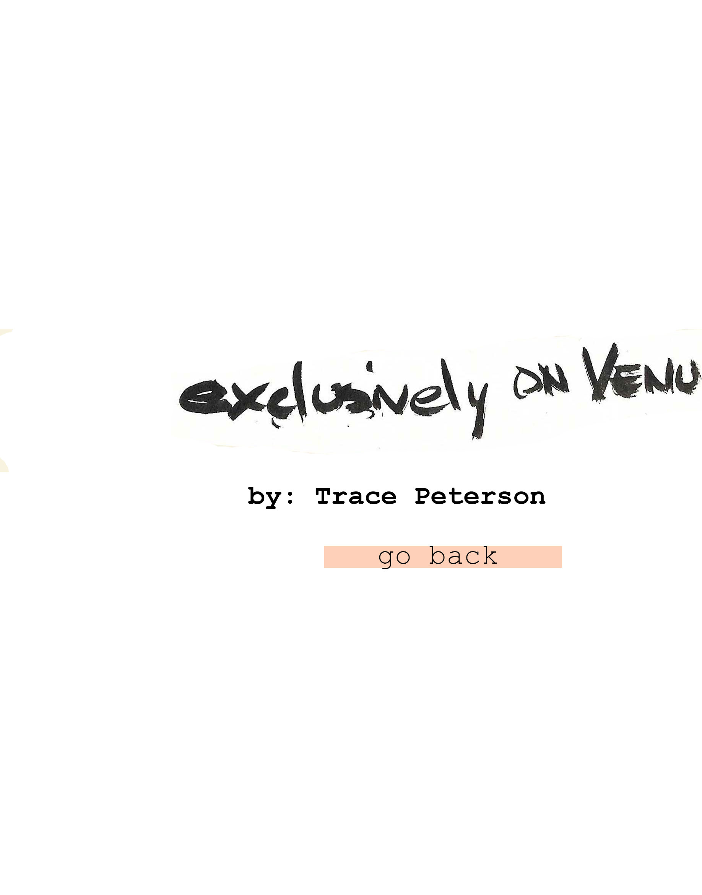

Roses are red / violets are transsexual / welcome to womanhood / now get to work honey
Roses are performative / violets are biological / I have very sensitive breasts / and so do your breasts
Roses are biological / you have the nicest skin / I can’t stop kissing you / let’s read more nondualistic queer theory
Roses are fed up / with our binary fetishes / I fucked my doctors / and stole all the medication to hide it in a cave and share it with other trans people
Roses have got me / up against the wall / kissing my neck / which is socially constructed to be a super hot strong feminist neck
Roses are violet / violets are roses / I really like you / I like you tube
Roses are born this way / violets have a lesbian streak / something about your dry sense of humor and our soft intertwined limbs / feels transcendently female
Roses are blue / violets are violet / roses are nonviolet / blue is bluenormative
Roses are from mars / violets had the whole surgery / setting up camp / exclusively on Venus
Roses have gone too far / not to be what girls are made of / I’m coming out / to my academic colleagues as a poet and I bet they will run away screaming
Roses are roses / violets are born this way / someone’s got a hoard / of heteronormative transaffirmation porn you say?
Roses are cheeky / I want you to fuck me / drown violets like an accused witch / in your arms which feel like mine
Violets got a name change / roses changed a pronoun / we ate at a restaurant / and forgot to put the leftovers in the fridge
Roses are trochaic / violets have their original plumbing / let’s march in a protest / then go home and we’ll cook something delicious and eat it with a spork
Violets are permanent / roses are impermanent / thank you for becoming me / offering to embrace your form your fate
Flowerbeds are umbrellas / umbrellas are rubrics / I support your identification / and your disidentification
Men are from women / roses are from Jupiter / women are from men / I can’t tell which is softer, your lips or this pillow or the snow descending gracefully outside